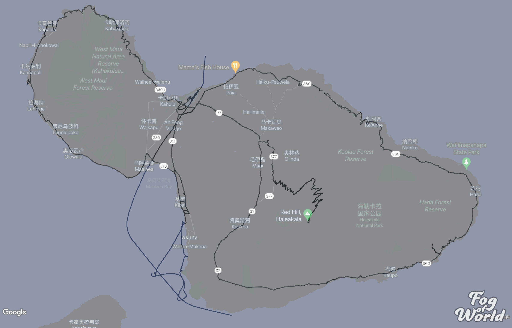
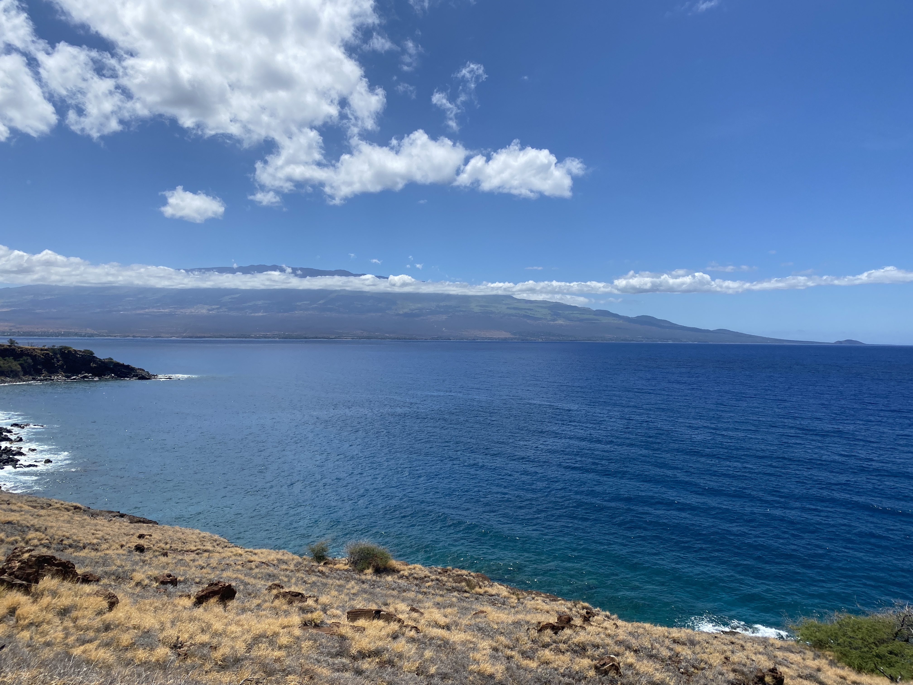
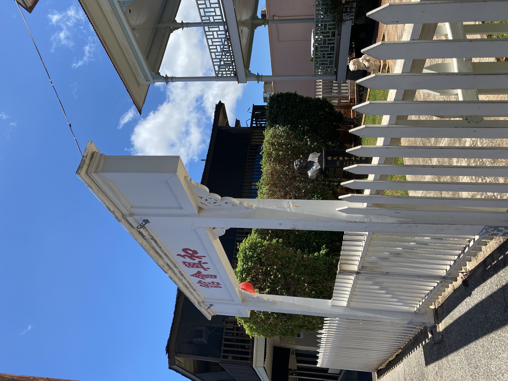
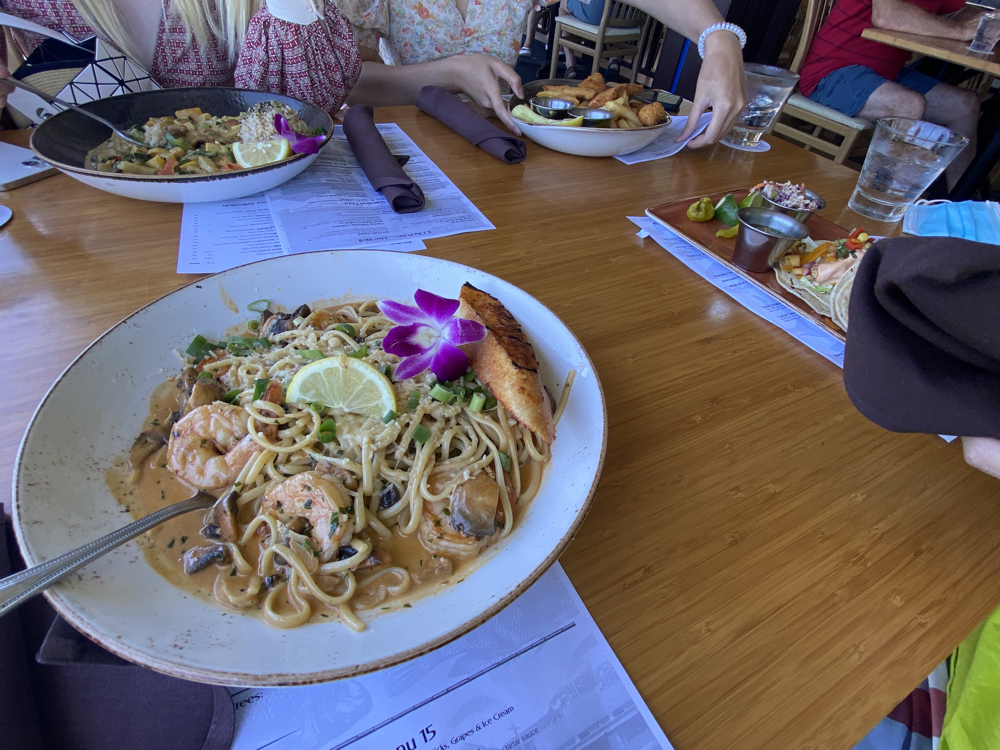
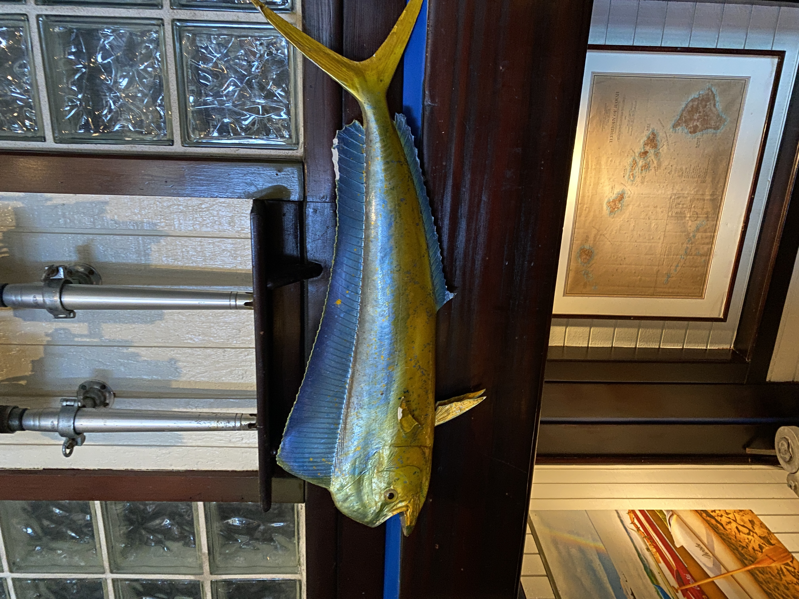
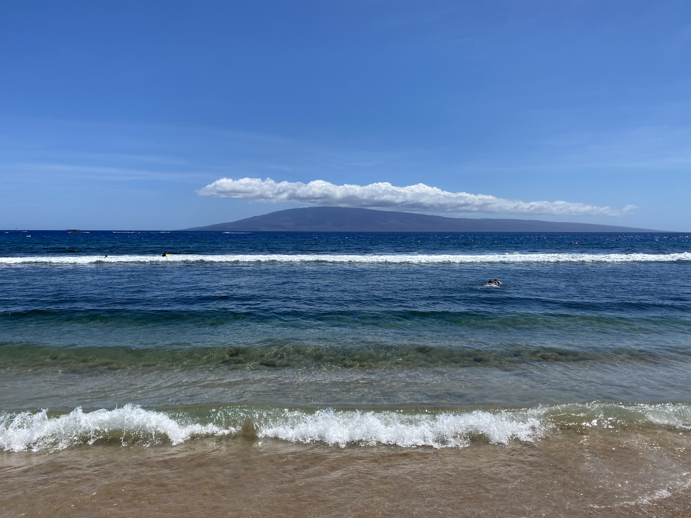

这篇博客分享我和朋友们在去年6月份夏威夷之旅的茂宜行程，下图是我们的全部足迹：

在打完两针疫苗并且成功拿到驾照后，趁着暑假实习前少有的时间，终于开始了最期待的夏日旅行。
旅行攻略
我们计划出行十一天，由于当时的防疫政策，决定先飞Maui，从Oahu回，以便减少一次核酸。由于时间很多，计划分配Maui四天，但后来改签机票，只待了三天，没有在沙滩上躺着或者去Kihei的海边玩（
Maui的主要景点有
- 西海岸Kaanapali沙滩（Lahaina, Kapalua）
- 东边Road to Hana
- Haleakala火山国家公园
- 南海岸Wailea沙滩（没有去
我们想去西南的Molokini Crater月亮湾浮潜，到火山国家公园看日出/日落，以及开Road to Hana哈纳之路。需要预定浮潜tour和抢日出票，于是其他行程都没有定。穷游锦囊推荐了Maui Classic Charter，这家Google评分很高，但太晚没有票了。最后在网上找到了Redline Rafting(@redlinerafting)，它家用的气垫船，会更快到月亮湾，票价也更贵。
Day 0
我们晚上八点到了OGG，在机场停车场取了Turo租的车，一辆2004 Scion xB。车很小但很便宜，竟然塞下全部行李，只要开一趟到Kihei的住处(Vrbo订的)。当晚我们去Safeway买了吃的。
Day 1
一早上大家抢明后两天的日出票，都没有抢到，日出行程无了，于是上午开车去西海岸的沙滩。沿海公路很美，我们开得很慢。

Papawai Scenic Lookout
在进入西茂宜的观景点短暂停留，然后到Lahaina。
Lahaina历史景点

和兴会馆

Lahaina Fish Co
排队很长，找了靠海的座位，可以看到海里的鱼

鬼头刀 在动森钓过
浅逛完我们去Kaanapali Beach，很艰难地停好车，冲到沙滩，我戴上泳镜下海游泳。

Kaanapali Beach
 Dragon’s Teeth
Dragon’s Teeth
 Prayer labyrinths
Prayer labyrinths
 Nakalele Blowhole
去Blowhole的路很崎岖。
我们决定从另一边回去，接下来的山路异常精彩，蜿蜒曲折道路狭窄，在单行道和local会车，local下来帮我们快速倒车，我回以Shaka sign，在夏威夷学到的会车手势。hins找了一家网红店——Tin Roof Maui，我们打包带回家。天空下雨，远处山笼罩在云中。
Nakalele Blowhole
去Blowhole的路很崎岖。
我们决定从另一边回去，接下来的山路异常精彩，蜿蜒曲折道路狭窄，在单行道和local会车，local下来帮我们快速倒车，我回以Shaka sign，在夏威夷学到的会车手势。hins找了一家网红店——Tin Roof Maui，我们打包带回家。天空下雨，远处山笼罩在云中。
Day 2
我们一早开车去浮潜，去monoki的船大部分在kihei，几分钟的路程。Redline Raftin有两艘气垫船（可能这样票多？），船上提供早餐（可惜是turkey三明治），四五十分钟到达浮潜地点（穿了游泳裤，忘记给大腿涂防晒，坐下的时候腿露出来，结果晒伤了）。monoki是月亮形状礁石，上面特别多鸟。工作人员简单教了一些浮潜技巧，我还记得如果管子进水可以吐气吹出来。水下珊瑚和鱼类很多，不穿救生衣可以潜更深。之后去了另一个浮潜点，有绿色珊瑚。最后去了岸边附近，有非常多的海龟，可以跟着游。浮潜结束，我们坐船在海上冲浪，喝到了夏威夷饮料。（后来在湾区的Mitsuwa有买到，没有那么好喝的感觉了） 回到住处休息，四点多我们出发去Haleakala火山国家公园。公园门票附带一张有Nene的卡片（保存收据，在road to hana的pipiwai trail需要用）。山海拔三千多米，要开很多圈绕山公路一点一点上去。山上很冷，要带厚衣服。我们先走了pa ka’oao trail. 然后去看日落。summit停车有限，ranger一直在赶没有停车位的车，绕了几圈，我们留了两个同伴下车看日落，开车绕出去再进来，结果出去发现进去的路被拦了，又回到visitor center。那里也可以看，还目睹求婚场面。等日落结束，我们找summit的同伴，但那里没有信号，我们准备出发的时候，看到她俩下来了，跟着一对印度情侣的车，还好。接下来因为日落天黑，下山公路非常刺激，所有的车点亮车灯，缓缓下降，连成一条曲线。等最后一条路出山，瞬间看到漫天星空，
Day 3
第三天是road to hana，晚上飞机去oahu，行程很满。我们先寄存行李，带在车上开车太重不安全。路上很多景点，印象深的有跳水池，忘记穿泳裤不能下水，只能看local表演。重点是路尽头的pipiwai trail，拥有原始森林，河流，竹林，在trail end 有一个百尺高瀑布，waimoku falls。这个名字是没朋友的意思，一度不想单个人和它合影（。原路返回要开很久，我们按照顺时针方向开出去，路况挺差，在悬崖和海的边上，后来往Haleakala山上开，见到了吃草的牛群和深蓝的大海，心情激动，是我目前见过的最美沿海公路了。顺利拿了行李，到达机场还好车，出发去oahu。
旅行总结
待的时间不够呀（后面两天的内容再补吧
Last modified on 2022-10-07